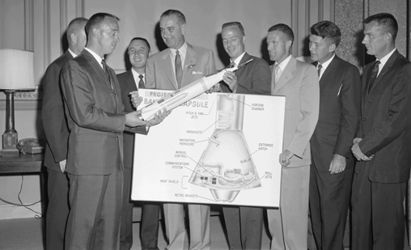

Creation
{kind=link}
From 1946, the National Advisory Committee for Aeronautics (NACA) had been experimenting with rocket planes such as the supersonic Bell X-1. In the early 1950s, there was challenge to launch an artificial satellite for the International Geophysical Year (1957–58). An effort for this was the American Project Vanguard. After the Soviet launch of the world's first artificial satellite (Sputnik 1) on October 4, 1957, the attention of the United States turned toward its own fledgling space efforts. The US Congress, alarmed by the perceived threat to national security and technological leadership (known as the "Sputnik crisis"), urged immediate and swift action; President Dwight D. Eisenhower and his advisers counseled more deliberate measures. On January 12, 1958, NACA organized a "Special Committee on Space Technology", headed by Guyford Stever. On January 14, 1958, NACA Director Hugh Dryden published "A National Research Program for Space Technology" stating:
It is of great urgency and importance to our country both from consideration of our prestige as a nation as well as military necessity that this challenge [Sputnik] be met by an energetic program of research and development for the conquest of space... It is accordingly proposed that the scientific research be the responsibility of a national civilian agency... NACA is capable, by rapid extension and expansion of its effort, of providing leadership in space technology.
While this new federal agency would conduct all non-military space activity, the Advanced Research Projects Agency (ARPA) was created in February 1958 to develop space technology for military application.
On July 29, 1958, Eisenhower signed the National Aeronautics and Space Act, establishing NASA. When it began operations on October 1, 1958, NASA absorbed the 43-year-old NACA intact; its 8,000 employees, an annual budget of US$100 million, three major research laboratories (Langley Aeronautical Laboratory, Ames Aeronautical Laboratory, and Lewis Flight Propulsion Laboratory) and two small test facilities. A NASA seal was approved by President Eisenhower in 1959. Elements of the Army Ballistic Missile Agency and the United States Naval Research Laboratory were incorporated into NASA. A significant contributor to NASA's entry into the Space Race with the Soviet Union was the technology from the German rocket program led by Wernher von Braun, who was now working for the Army Ballistic Missile Agency (ABMA), which in turn incorporated the technology of American scientist Robert Goddard's earlier works. Earlier research efforts within the US Air Force and many of ARPA's early space programs were also transferred to NASA. In December 1958, NASA gained control of the Jet Propulsion Laboratory, a contractor facility operated by the California Institute of Technology.